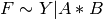
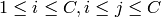
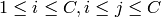
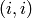
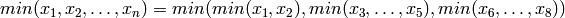

Introduction¶
Massive data sets have become commonplace today. Powerful hardware is readily available with a terabyte of hard drive storage costing less than $150 and computers with many cores a norm. Today, the moderately adventurous scientist can connect two computers to form a distributed computing platform. Languages and software tools have made concurrent and distributed computing accessibly to the statistician.
It is important to stress that a massive data set is not just a single massive entity that needs to be stored across multiple hard drives but rather the size of the data created during the steps of an analysis. A ‘small’ 14 GB data set can easily become 190 GB as new data structures are created, or where multiple subsets /transformations are each saved as different data sets. Large data sets can come as they are or grow big because of the nature of the analysis. No analyst wants her research to be restricted because the computing infrastructure cannot keep up with the size or complexity.
Hadoop¶
Hadoop is an open source programming framework for distributed computing with massive data sets using a cluster of networked computers. It has changed the way many web companies work, bringing cluster computing to people with little knowledge of the intricacies of concurrent/distributed programming. Part of the reason for its success is that it has a fixed programming paradigm. It somewhat restricts what the user can parallelize but once an algorithm has been written the ‘MapReduce way’, concurrency and distribution over a cluster comes for free.
It consists of two components: the Hadoop Distributed Filesystem and Hadoop MapReduce. They are based on the Google Filesystem and Google MapReduce respectively. Companies using these include Amazon, Ebay, New York Times, Facebook to name a few. The software can be downloaded from here .
Hadoop Distributed Filesystem¶
The Hadoop Distributed Filesystem (HDFS) sits on top of the file system of a computer (called the local filesystem). It pools the hard drive space of a cluster or heterogenous computers (e.g. different hardware and operating systems) and provides a unified view to the user. For example, with a cluster of 10 computers each with 1TB hard drive space available to Hadoop, the HDFS provides a user 10 TB of hard drive space. A single file can be bigger than maximum size on the local filesystem e.g. 2TB files can be saved on the HDFS. The HDFS is catered to large files and high throughput reads. Appends to files are not allowed. Files written to the HDFS are chunked into blocks, each block is replicated and saved on different cluster computers. This provides a measure of safety in case of transient or permanent computer failures. When a file is written to the HDFS, the client contacts the Namenode, a computer that serves as the gateway to the HDFS. It also performs a lot of administrative tasks, such as saving the mapping between a file and the location of its block across the cluster and so on. The Namenode tells the client which Datanodes (the computers that make up the HDFS) to store the data onto. It also tells the client which Datanodes to read the data from when a read request is performed. See (A schematic of the Hadoop File System) for an graphical outline of the file copy operation to the HDFS.
A schematic of the Hadoop File System
Hadoop MapReduce¶
Concurrent programming is difficult to get right. As Herb Sutter put it:
... humans are quickly overwhelmed by concurrency and find it much more difficult to reason about concurrent than sequential code.
A statistician attempting concurrent programming needs to be aware of race conditions, deadlocks and tools to prevent this: locks, semaphores, and mutually exclusive regions etc. An approach suggested by Sutter et al ([STLa]) is to provide programming models not functions that force the programmer to approach her algorithms differently. Once the programmer constructs the algorithm using this model, concurrency comes for free. The MapReduce programming model is one example. Correctly coded Condor DAGS are another example.
| [STLa] | Software and the concurrency revolution, H. Sutter and J. Larus, ACM Queue, Volume 3,Number 7 2005 |
MapReduce ([MapRed]) consists of several embarrassingly parallel splits which are evaluated in parallel. This is called the Map. There is a synchronization guard where intermediate data created at the end of the Map is exchanged between nodes and another round of parallel computing starts, called the Reduce phase. In effect large scale simulation trials in which the programmer launches several thousands of independent computations is an example of a Map. Retrieving and collating the results (usually done in the R console) is an example of a manual reduce.
| [MapRed] | MapReduce: Simplified Data Processing on Large Clusters, Jeffrey Dean and Sanjay Ghemawat,*Communications of the ACM*, 2008 |
In detail, the input to a MapReduce computation is a set of N key,value pairs. The N pairs are partitioned into S arbitrary splits. Each split is a unit of computation and is assigned to one computing unit on the cluster. Thus the processing of the S splits occurs in parallel. Each split is processed by a user given function M, that takes a sequence of input key,value pairs and outputs (one or many) intermediate key,value pairs. The Hadoop framework will partition the intermediate values by the intermediate key. That is intermediate values sharing the same intermediate key are grouped together. Once the map is complete, the if there are M distinct intermediate keys, a user given function R, will be given an intermediate key and all intermediate values associated with the same key. Each processing core is assigned a subset of intermediate keys to reduce and the reduction of the M intermediate keys occurs in parallel. The function R, takes an intermediate key, a stream of associated intermediate values and returns a final key,value pair or pairs.
The R programmer has used MapReduce ideas. For example, the tapply command
splits a vector by a list of factors. This the map equivalent: each row of the
vector is the value and the keys are the distinct levels of the list of
factors. The reduce is the user given function applied to the partitions of the
vector. The xyplot function in lattice takes a formula e.g. , subsets the the data frame by the cartesian product of the levels of
 and
and  (the map) and displays each subset (the reduce). Hadoop
MapReduce generalizes this to a distributed level.
(the map) and displays each subset (the reduce). Hadoop
MapReduce generalizes this to a distributed level.
An overview of Hadoop MapReduce
Examples¶
Two examples, one for quantiles and another for correlation will be described.
Approximate Quantile¶
Let  be a column of numbers. This can be arbitrarily large
(e.g. hundreds of gigabytes). The objective is to find the quantiles of the
. Let each number be a key. For discrete data e.g. ages (rounded to
years), count data, the number of unique numbers in a data set is generally not
large. For continuous data it can be many billions. In this case, we need to
discretize this. Care is needed before discretization. Discretions is equivalent
to binning and reduces the number of unique data points. For example, do not
round to the 5’th decimal place if the data points are the same for the first 5
decimal places!
be a column of numbers. This can be arbitrarily large
(e.g. hundreds of gigabytes). The objective is to find the quantiles of the
. Let each number be a key. For discrete data e.g. ages (rounded to
years), count data, the number of unique numbers in a data set is generally not
large. For continuous data it can be many billions. In this case, we need to
discretize this. Care is needed before discretization. Discretions is equivalent
to binning and reduces the number of unique data points. For example, do not
round to the 5’th decimal place if the data points are the same for the first 5
decimal places!
For this example, let us assume the data is discrete (so no need for rounding). The goal is to compute the frequency table of the data and use that to compute the quantiles (see [HynFan])
| [HynFan] | Hyndman, R. J. and Fan, Y. (1996) ‘Sample quantiles in statistical packages’, American Statistician, 50, 361-365). |
for line in line_of_numbers:
for number in tokenize line by [[:space:]]:
write_key_value(number,1)
The input data is partitioned into a splits of many lines of numbers. The above code is applied to these splits in parallel. The intermediate keys are the unique numbers and each has a list of 1‘s associated with it. Hadoop will sort the keys by the number (not neccassirly by the quantity of the number, it depends on the programming framework) and assign the aggregation computation of the associated values for the different unique keys to different processing cores in the reduce phase. The reduce logic is as
1 2 3 4 5 6 | for number in stream_of_unique_numbers:
sum=0
while has_more_values?()==TRUE:
sum=sum+get_new_value()
end while
write_key_value(number, sum)
|
Notice the intermediate keys (the value of the number) and the final key (see
last line above) are the same. The unique numbers are partitioned. Thus the
stream in line 1 is stream of a subset. The different subsets are processed on
different compute cores. Note, the reduce code sums the 1‘s in a while loop
rather than loading them all into one gigantic array and adding the array. There
can be too many 1‘s to fit into core. This where the MapReduce implementation
shines: big data. The algorithm finally outputs the distinct numbers of
and the counts. This can be sorted and used to compute the
quantiles. This algorithm is also used to compute word frequencies for text
document analysis.
Correlation¶
To compute the correlation of a text file of N rows and C columns, we need the sum, sums of squares of each column and sum of unique pairs of columns. The intermediate keys and final keys are the same: the column and column pair identifiers. The value will be the sum of columns, their sum of squares,the cross products and the number of entries.
We need to iterate over lines, tokenize, and compute the relevant column sums and pairwise cross products.
1 2 3 4 5 6 7 8 9 10 | for text_line in stream_of_text_lines
tokenized_line = tokenize text_line by [[:space:]]
for i=1 to C:
rhcollect( (i,i), (n=1,sum=tokenized_line[i],ssq=tokenized_line[i]^2))
for j=i+1 to C:
rhcollect( (i,j), (crossprod=
tokenized_line[i]* tokenized_line[j]))
end for
end for
end for
|
The intermediate keys produced at the end of the map nodes are pairs
 where  . The values are the
original value (the value for row i and column j), its square and
crossproduct. The n is just a 1. By adding the values for this we obtain the
total number of rows. Inserting this 1 is wasteful, since it is redundantly
being passed around for all the keys - we could compute the number of rows in
another MapReduce job.
where  . The values are the
original value (the value for row i and column j), its square and
crossproduct. The n is just a 1. By adding the values for this we obtain the
total number of rows. Inserting this 1 is wasteful, since it is redundantly
being passed around for all the keys - we could compute the number of rows in
another MapReduce job.
We need to sum this:
1 2 3 4 5 6 7 8 9 10 11 | for identifier in stream_of_identifiers:
## identifier is a colum pair
sum = empty tuple
while has_more_values?()==TRUE:
sum = sum + get_new_value()
# get_new_value() will return
# a tuple of length
# = 3 (if identifier is (i,i)
# = 1 (if identifier is (i,j) i <> j
end while
rhcollect(identifier, sum)
|
The output will be a set of pairs or triplets according as the key is
 or .
Computing an Inner Join¶
We have a text file A of N columns and B with M columns. Both have a common column index. In A, it is unique, with one row per level of index. B is a repeated measurement data set, with the levels of index repeated many times. B also contains a column called weight. We need to compute the following operation, for every unique value of index in A, compute the mean value of weight. We need to join the two data sets on index and compute the number of observations and sum of weight for unique values index and save a data set which consist of only those values of index found in A.
In SQL, this is
select
index,
mean(weight) as mweight
from A inner join B
on A.index=B.index
group by A.index
1. Compute the number of observations and sum of weights aggregated by levels of index for B. This computes the values for all levels of index in B not just those found in A. Call this computed data set B’
2. Merge B’ and A .This might be wasteful since we compute for all levels in B, however if the summarized data set B’ will be used often, then this is a one time cost.
Summarizing B to B’
1 2 3 4 5 6 7 8 9 10 11 12 13 | #map
for line in lines:
index = get column corresponding to "index" from line
weight = get column corresponding to "weight" from line
rhcollect(index,(1,weight))
#reduce
for index in stream_of_indices:
## identifier is a colum pair
sum = empty tuple
while has_more_values?()==TRUE:
sum = sum + get_new_value()
rhcollect(index, sum) #total number of obs, sum of weight
|
To merge, we map each index value found in A to a TRUE value and each value found in B’ to a tuple (number of observations and sum of weights). If a value of index is found in both there will be two intermediate values for that value of index. If instead the value of index exists in exactly one of A and B there will be exactly one intermediate value. If there are two values, one is a dummy (the TRUE) and the pseudo-code retains the value whose length is 2 (the tuple).
1 2 3 4 5 6 7 8 9 10 11 | for index in stream_of_indices:
count = 0
information = NULL
while has_more_values?()==TRUE:
count = count + 1
temp = get_next_value()
if length of temp == 2:
information = temp
end while
if count == 2:
rhcollect(index, information)
|
Combiners : An Optimization¶
The Hadoop framework, sends all the intermediate values for a given key to the reducer. The intermediate values for a given key are located on several compute nodes and need to be shuffled (sent across the network) to the node assigned the processing of that intermediate key. This involves a lot of network transfer. Some operations do not need access to all of the data (intermediate values) i.e they can compute on subsets and order does not matter i.e associative and commutative operations. For example, the minimum of 8 numbers 
The reduction occurs on just after the map phase on a subset of intermediate values for a given intermediate keys. The output of this is sent to the reducer. This greatly reduces network transfer and accelerates the job speed.
{kind=link}
A MapReduce job using a combiner (the minimum operator). We consider intermediate values for a single key.
The examples in this section outlined some algorithms that work with MapReduce. Using RHIPE, there are ways to optimize the above code e.g. instead of processing one line at a time use vector operations. Also, RHIPE calls the code with R lists containing the input the keys and values. The streams in the Reduce are replaced by lists of intermediate values and the R code is called repeatedly with the list filled with new elements. This will be explained in the Airline data example (see Airline Dataset)
R and Hadoop Integrated Programming Environment¶
The R and Hadoop Integrated Programming Environment is R package to compute across massive data sets, create subsets, apply routines to subsets, produce displays on subsets across a cluster of computers using the Hadoop DFS and Hadoop MapReduce framework. This is accomplished from within the R environment, using standard R programming idioms. For efficiency reasons, the programming style is slightly different from that outlined in the previous section.
The native language of Hadoop is Java. Java is not suitable for rapid development such as is needed for a data analysis environment. Hadoop Streaming bridges this gap. Users can write MapReduce programs in other languages e.g. Python, Ruby, Perl which is then deployed over the cluster. Hadoop Streaming then transfers the input data from Hadoop to the user program and vice versa.
Data analysis from R does not involve the user writing code to be deployed from the command line. The analyst has massive data sitting in the background, she needs to create data, partition the data, compute summaries or displays. This need to be evaluated from the R environment and the results returned to R. Ideally not having to resort to the command line.
RHIPE is just that.
- RHIPE consist of several functions to interact with the HDFS e.g. save data sets, read data created by RHIPE MapReduce, delete files.
- Compose and launch MapReduce jobs from R using the command rhmr and rhex. Monitor the status using rhstatus which returns an R object. Stop jobs using rhkill
- Compute side effect files. The output of parallel computations may include the creation of PDF files, R data sets, CVS files etc. These will be copied by RHIPE to a central location on the HDFS removing the need for the user to copy them from the compute nodes or setting up a network file system.
- Data sets that are created by RHIPE can be read using other languages such as Java, Perl, Python and C. The serialization format used by RHIPE (converting R objects to binary data) uses Googles Protocol Buffers which is very fast and creates compact representations for R objects. Ideal for massive data sets.
- Data sets created using RHIPE are key-value pairs. A key is mapped to a value. A MapReduce computations iterates over the key,value pairs in parallel. If the output of a RHIPE job creates unique keys the output can be treated as a external-memory associative dictionary. RHIPE can thus be used as a medium scale (millions of keys) disk based dictionary, which is useful for loading R objects into R.
Future Work
I plan on incorporating input and output bridges between RHIPE and HBase.
In summary, the objective of RHIPE is to let the user focus on thinking about the data. The difficulties in distributing computations and storing data across a cluster are automatically handled by RHIPE and Hadoop.